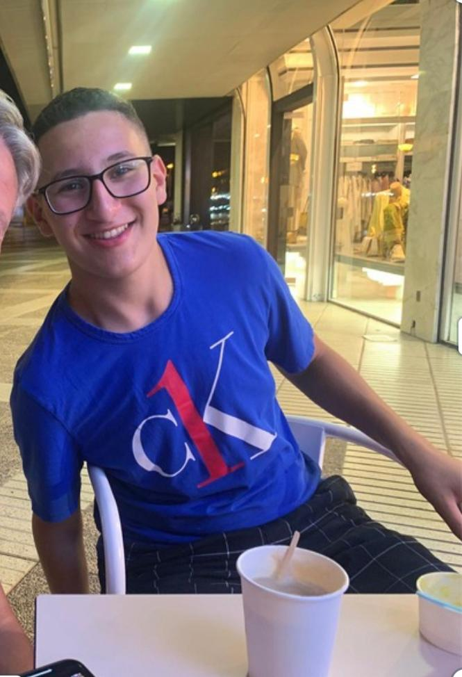

Abdennour el Banihiati
Data-gedreven Built Environment · Hogeschool Utrecht
Student jaar 2. Ik combineer GIS, data-analyse en digitaal bouwen om ruimtelijke vraagstukken inzichtelijk te maken — van energietransitie op wijkniveau tot real-time sensormonitoring.
Python
QGIS
Revit
Grafana
BIM
Tygron
Data-analyse
0
projecten afgerond
0
jaar HBO-opleiding
0.500 m²
plangebied ontworpen
0
sensoren gemonitord
Filter op tool:
Jaar 1
Jaar 1 — 2024/2025
3 projectenJaar 2